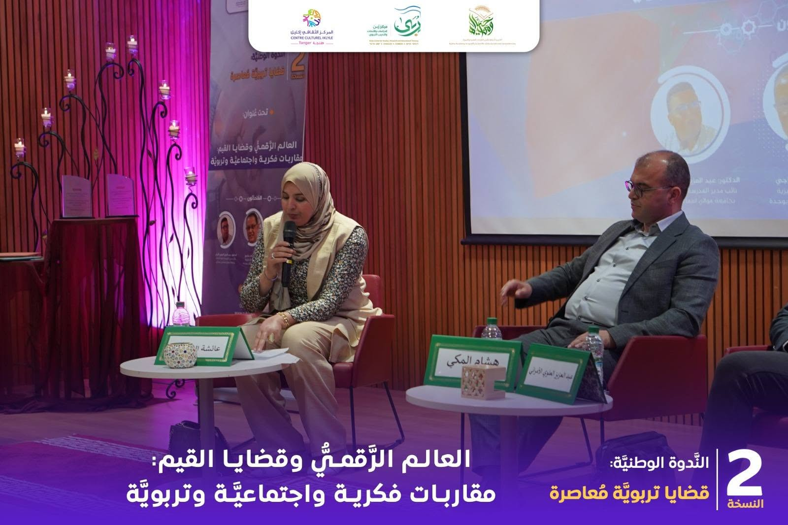
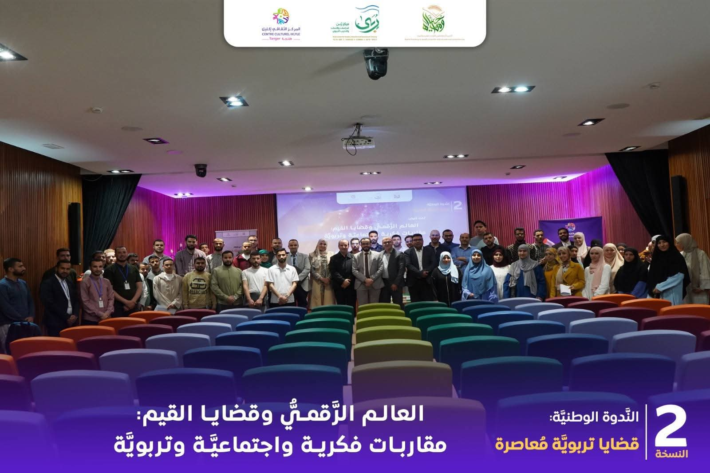
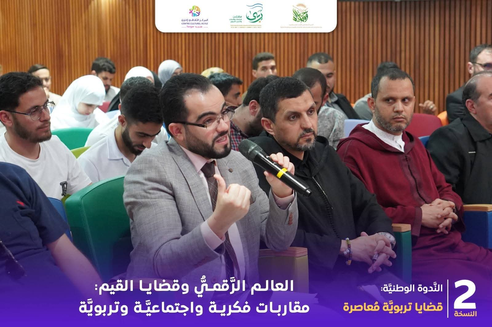

الندوات والمؤتمرات والأنشطة العلمية والأكاديمية للدكتورة عائشة الطويل



تسيير الندوة الوطنية الثانية: "العالم الرقمي وقضايا القيم: مقاربات فكرية واجتماعية وتربوية" في إطار الأنشطة العلمية والأكاديمية، تشرفت بتسيير الندوة الوطنية الثانية الموسومة بـ "العالم الرقمي وقضايا القيم: مقاربات فكرية واجتماعية وتربوية"، التي نظمها مركز ربى للدراسات والأبحاث والتدريب التربوي، بشراكة مع أكاديمية أحياها للتكوين والاستشارات، بمشاركة نخبة من الأساتذة والباحثين المتخصصين. وقد تناولت الندوة جملة من القضايا الفكرية والاجتماعية والتربوية المرتبطة بالتحولات الرقمية وأثرها في منظومة القيم، مع تقديم رؤى علمية ومقاربات عملية لتعزيز الوعي المجتمعي وترسيخ القيم الأصيلة في البيئة الرقمية. وقد شكلت هذه المشاركة مناسبة للإسهام في إنجاح هذا اللقاء العلمي، وإدارة جلساته بما يضمن حسن سير النقاش وتحقيق أهدافه العلمية والتربوية.
التاريخ: ............
العودة إلى الصفحة الرئيسية